/* deana-lawson - proofs */
12 plates. Deterministic overlays rendered by the composition-analysis skill.
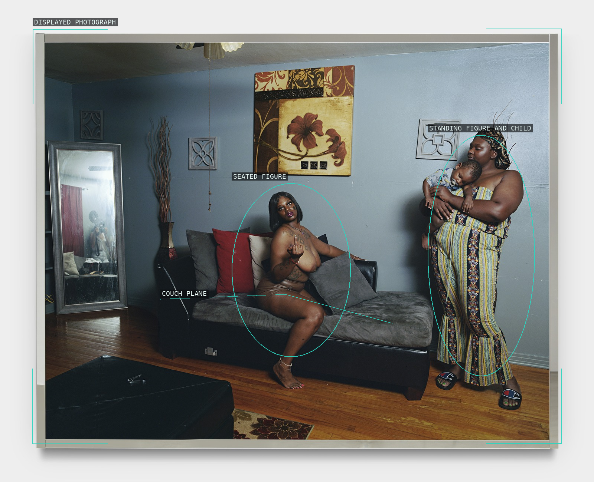
01-cardeidra
Two figure groups cross an open domestic wall.
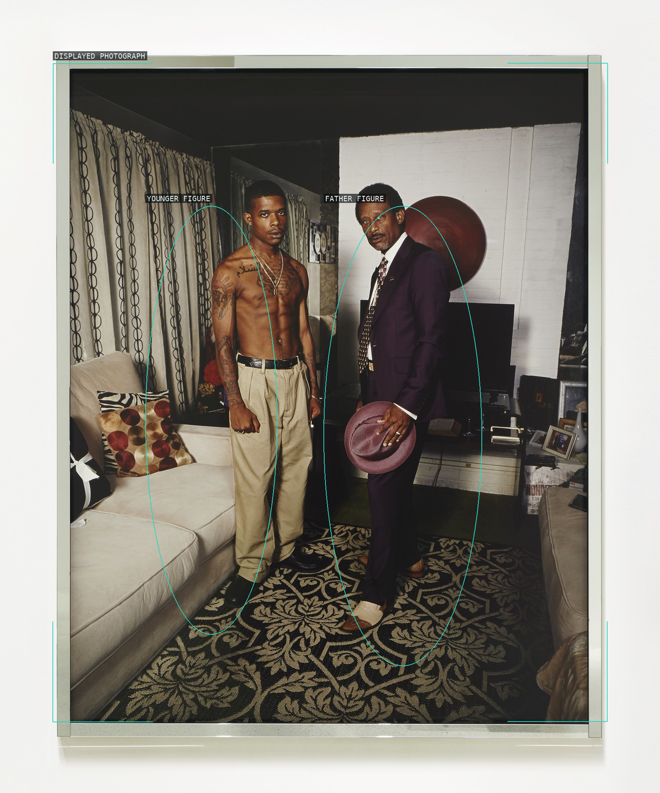
02-barrington-and-father
Two frontal figures hold a shallow room.
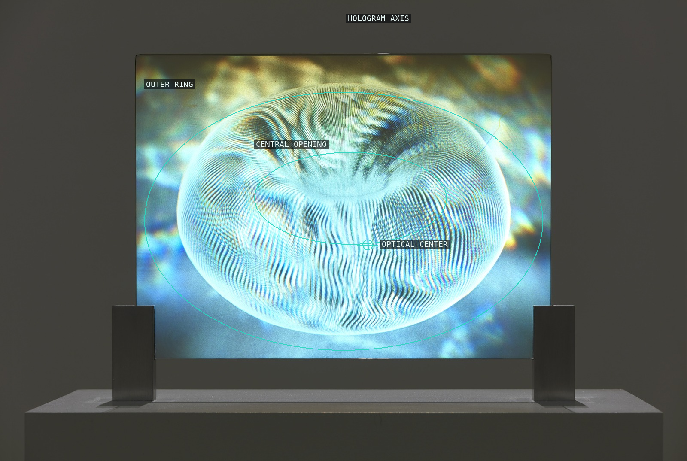
03-torus
A ring folds optical stripes into a center.
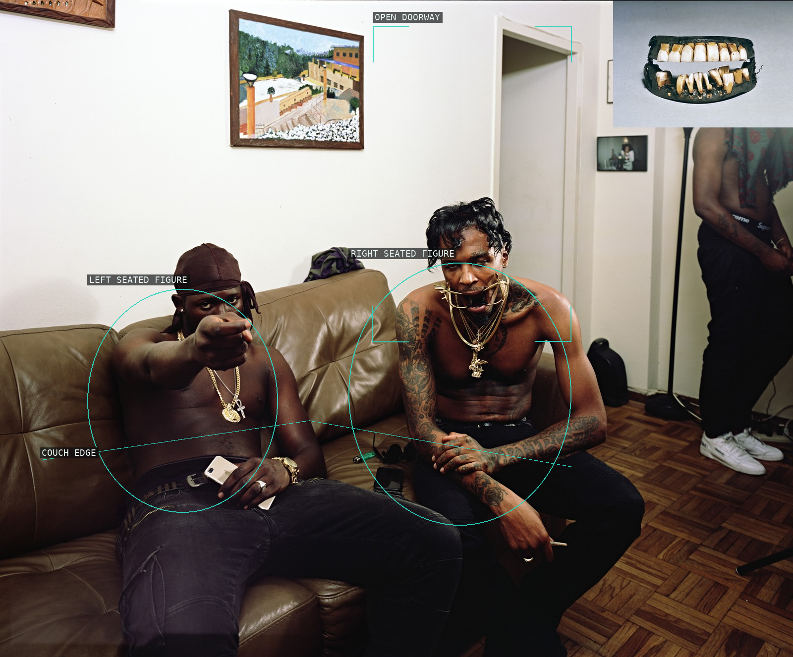
04-nation
Doorway and couch split competing planes.
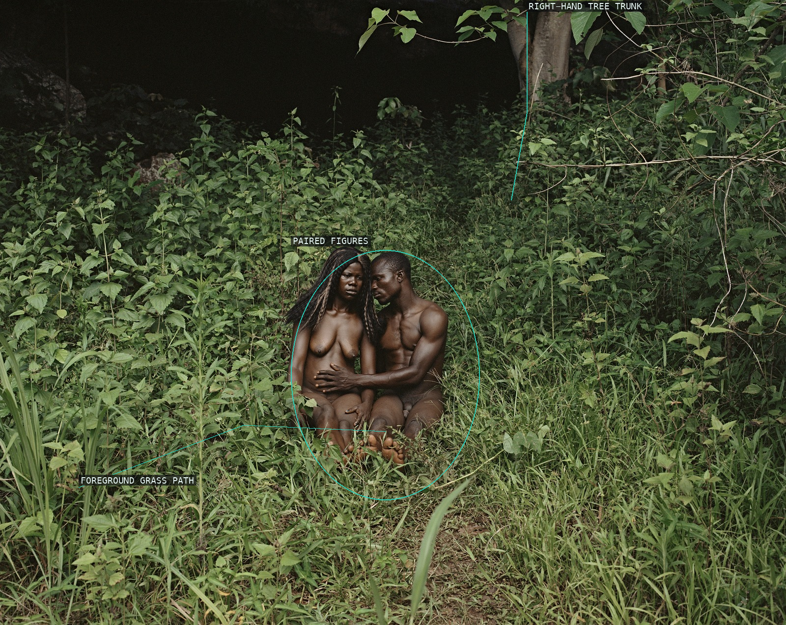
05-the-garden-gemena-dr-congo
A small pair sits inside dense foliage.
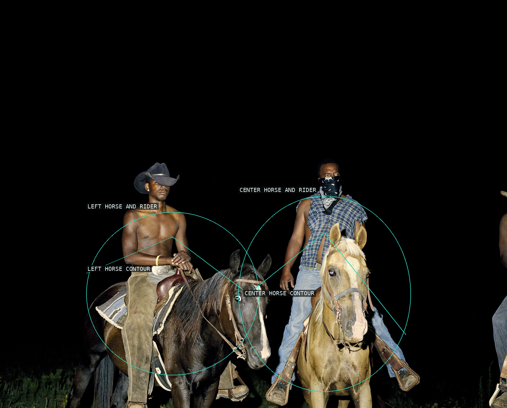
06-cowboys
Riders emerge as overlapping silhouettes.
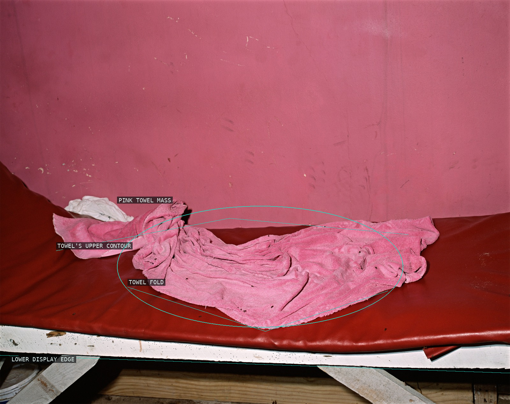
07-hellshire-beach-towel-with-flies
A folded towel isolates itself in red.
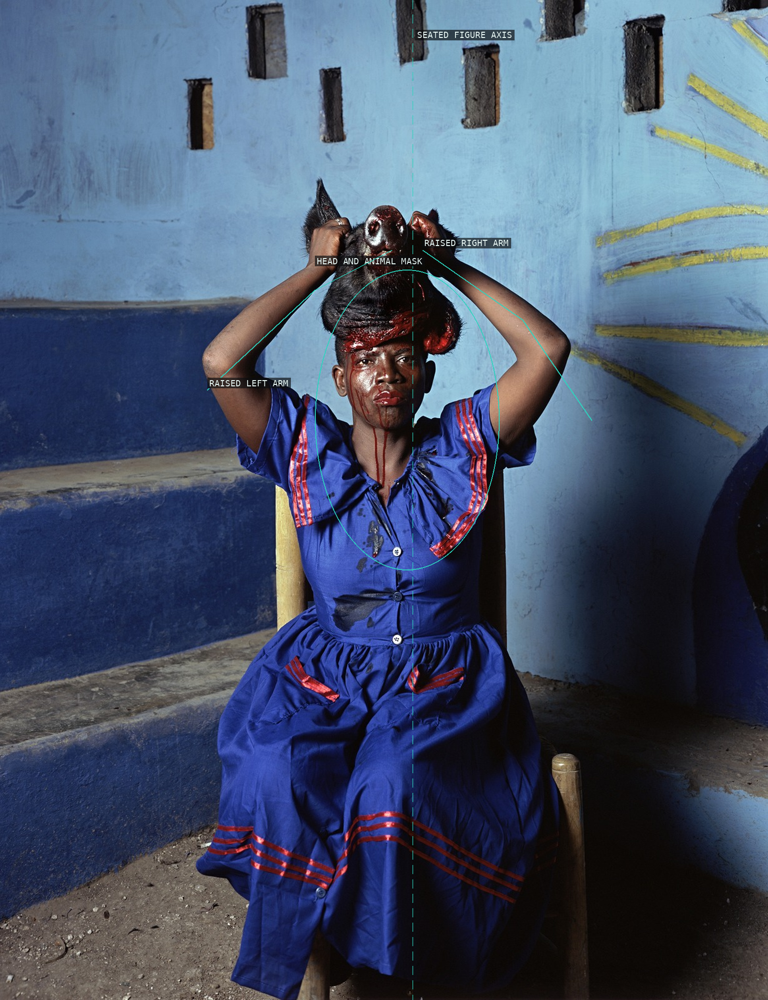
08-as-above-so-below
Arms and mask form a vertical emblem.
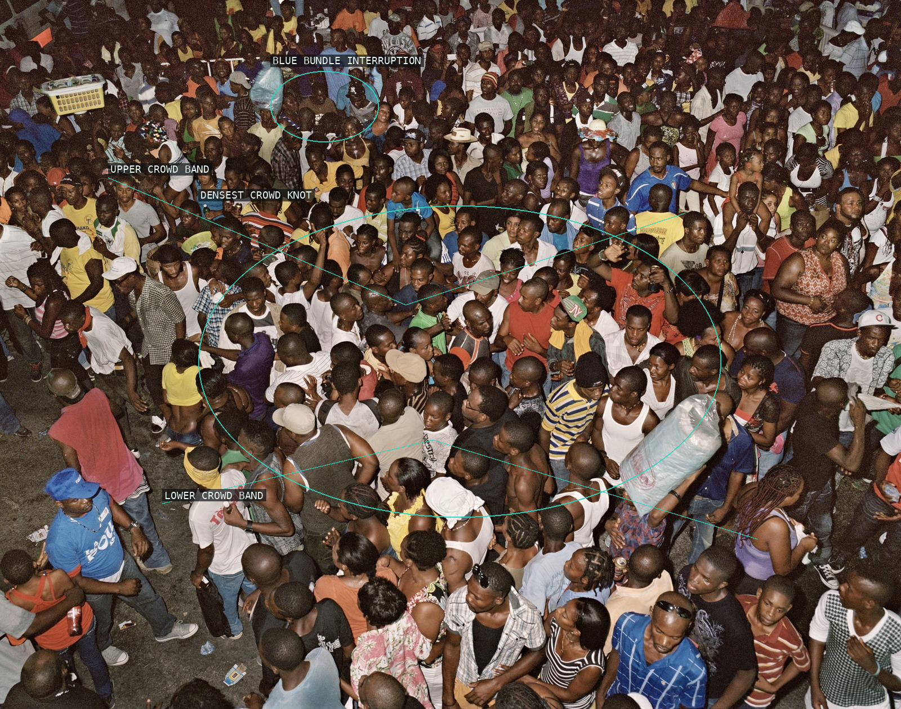
09-congregation
Crowd bands gather around bright interruptions.
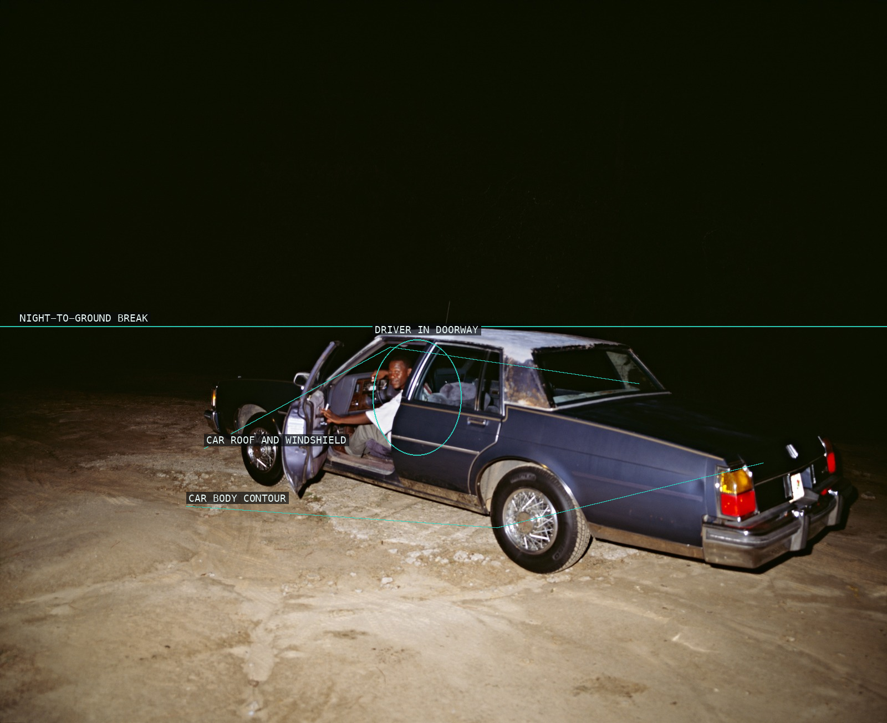
10-dirty-south
A car and driver break a dark field.
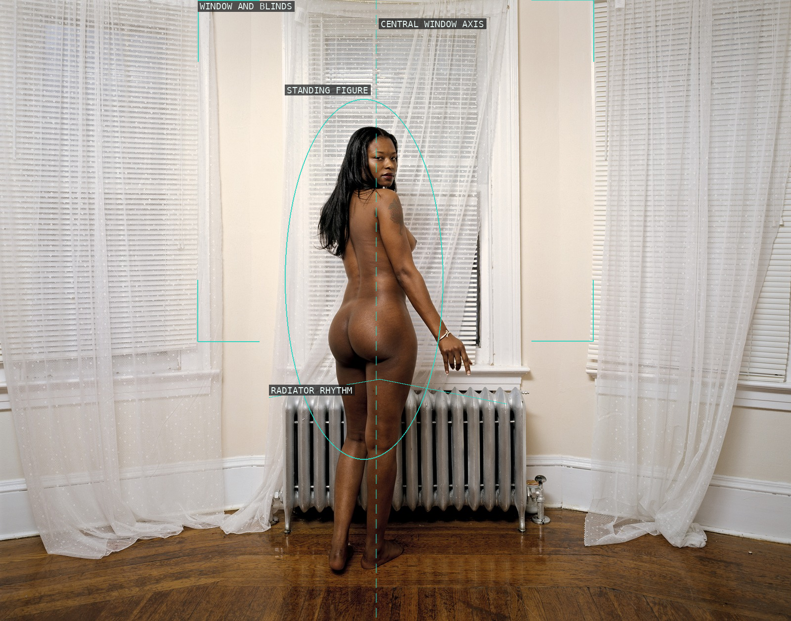
11-sharon
Window, blinds, and radiator organize a turn.
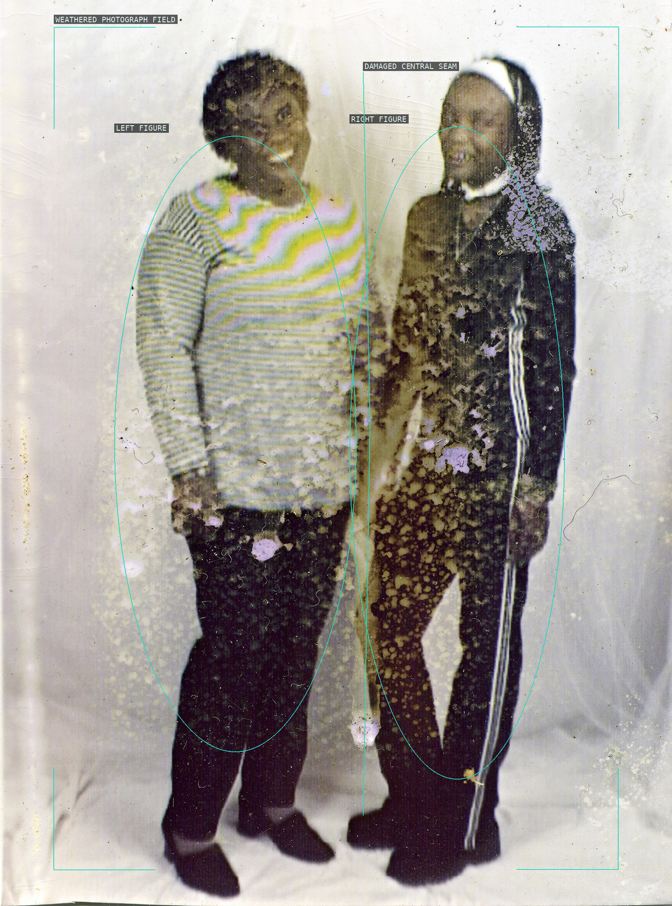
12-emily-and-daughter-appropriated-image
Two figures persist through a damaged field.